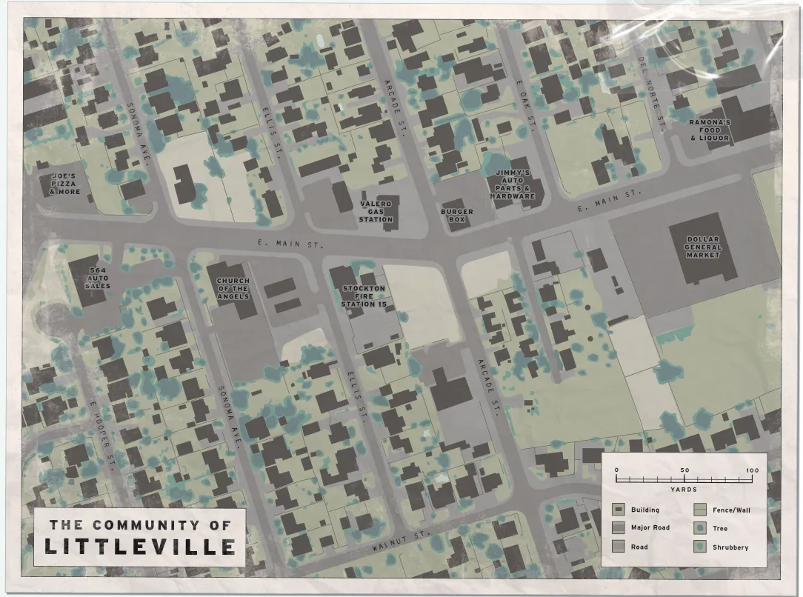
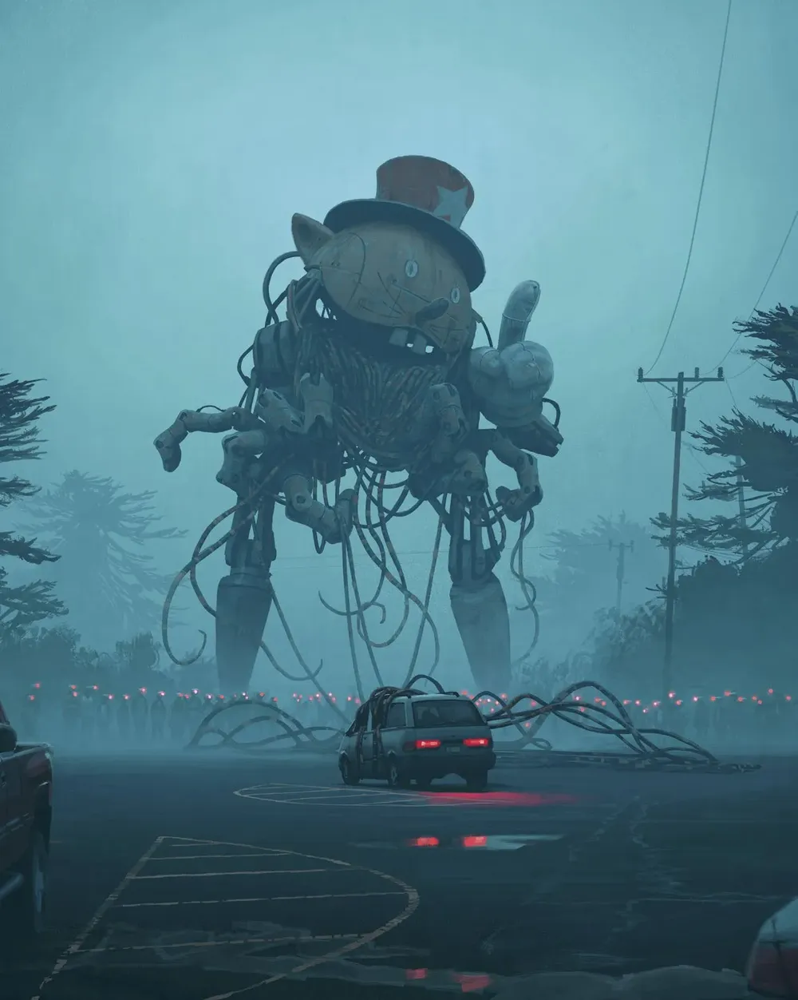

Ramona’sBurger BoxJimmy’sChurch of the AngelsCountdown S. 171
- 1Ein NSC lädt die Reisenden zur Predigt in der Church of the Angels ein.
- 2Die Gemeinde zieht nachts mit Kerzen zur Kirche.
- 3Der „Erzengel“ ruft die Gläubigen in die Neurolandschaft.
- 4Jimmy und seine Schläger tauchen auf …
- 5…
- 6…
Willy Ausreißerin
Die Sozialarbeiterin Jo Watts sucht nach ihr.
Francis Veteran
Die Ehefrau will ihn nach Hause holen.
Cade Künstler
Biker im Auftrag der Plattenfirma.
Der Engel in der Maschine S. 169

Vorlesetext aus dem Buch (Kasten ohne Beschriftung): Auf dem Parkplatz stand eine Menschenmenge um etwas herum, das wie eine gewaltige umgebaute Drohne aussah …
Buchtext des Halts, vollständig übersetzt und flach über die volle Breite: wofür der Halt gedacht ist, wo er liegt (Vororte von Stockton im Central Valley). Personen wie Father Marcos oder Jimmy Shute sind anklickbar und öffnen ihre NSC-Karte mit kleinem Porträt und Werteblock.
Das Hochformat-Eröffnungsbild steht ungeschnitten rechts, der Text fließt daneben und darunter weiter über die volle Breite – keine leere Spalte.
Abschnitte „Das Hindernis“, „Die Lage“, „Orte“ und „NSC“ liegen in der Seitenleiste; die Orte stehen auf einer Seite flach untereinander (Klick auf die Überschrift = besucht, grau).